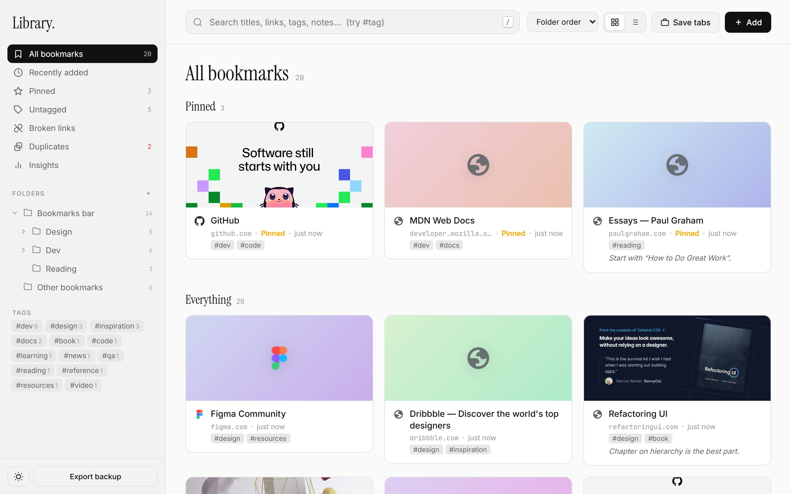
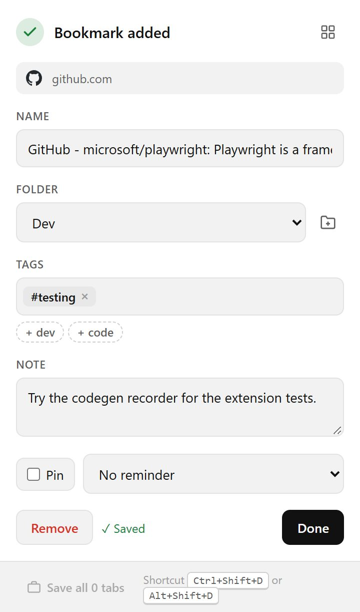
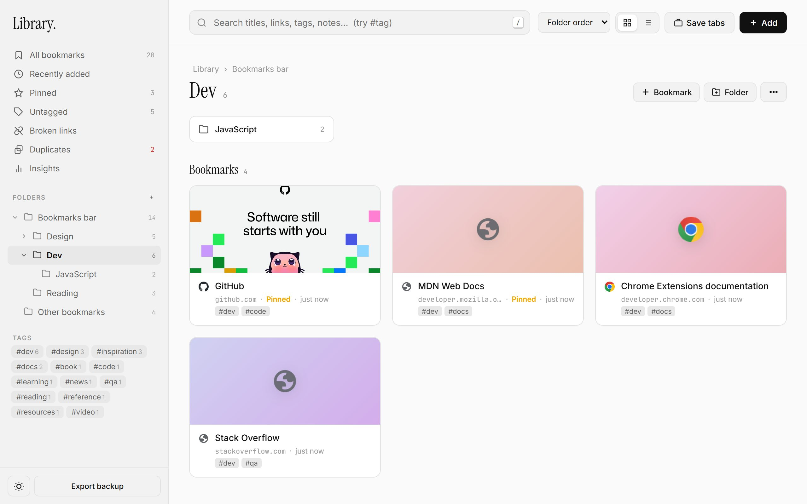
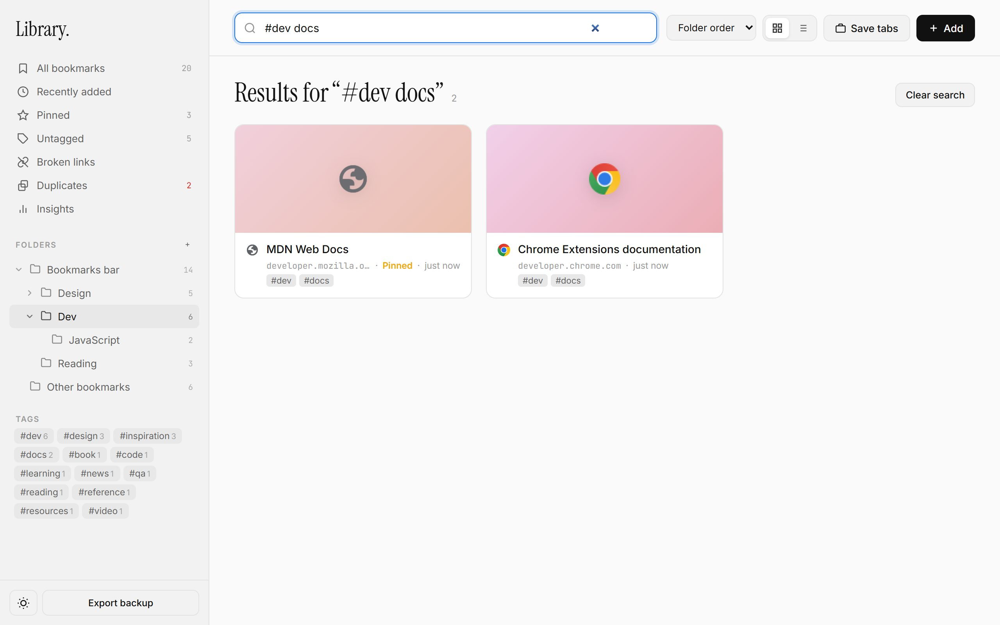
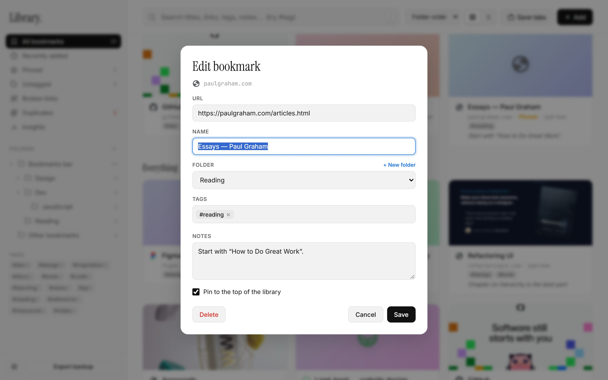
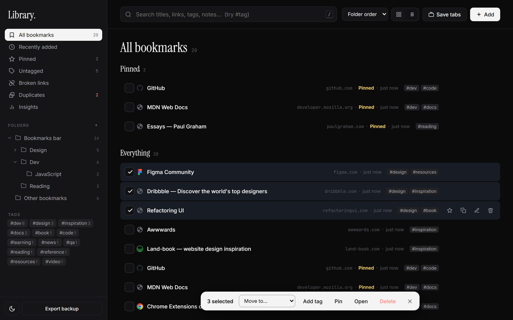
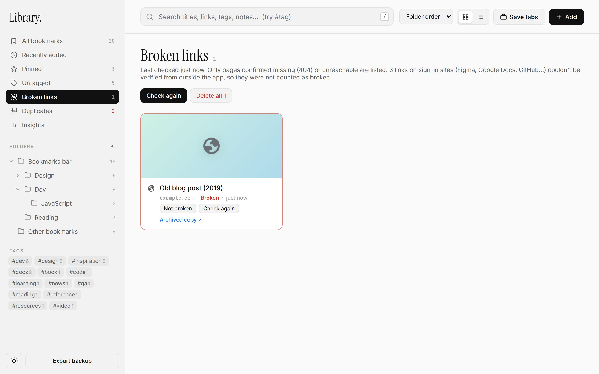
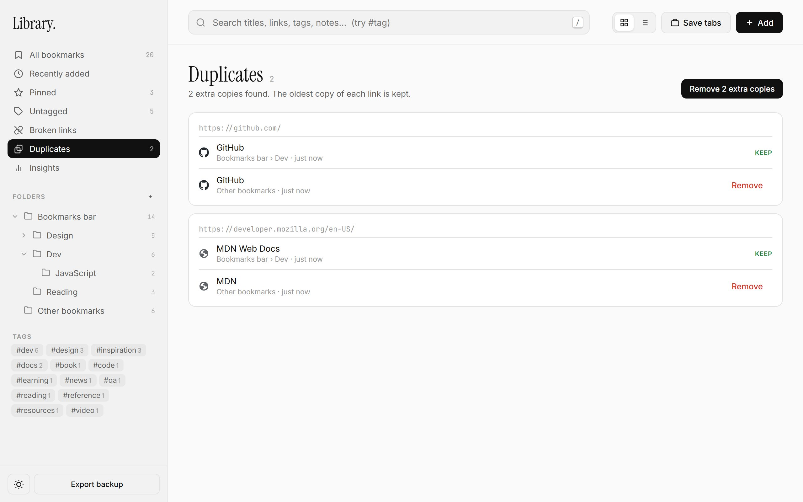
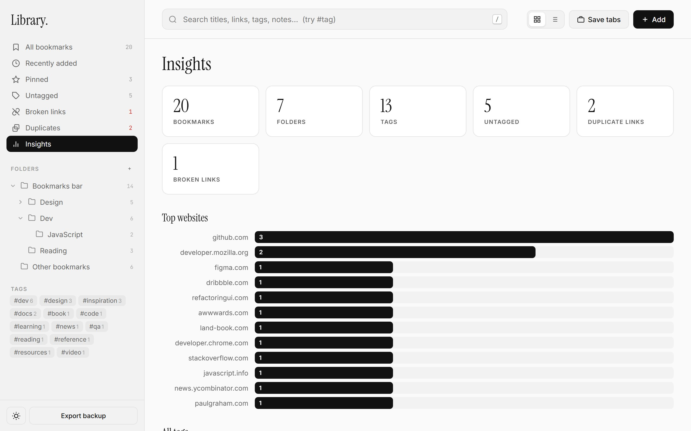

Bookmark Organizer
Save any page in one keystroke, then find it again later. Bookmark Organizer adds tags, notes, reminders and a clean full-page library on top of Chrome's own bookmarks, and helps you clear out dead and duplicate links.
- Save: Ctrl+Shift+D
- Works with your existing Chrome bookmarks
- No account, everything stays in your browser
- Light & dark themes

Install the extension
Bookmark Organizer is installed from its folder, the same way developers load extensions in Chrome. It takes about a minute.
- Download or copy the Bookmark Organizer folder to your computer and unzip it if needed. Keep it somewhere permanent, because Chrome loads the extension from that folder.
- Open
chrome://extensionsin the address bar. - Turn on Developer mode with the switch in the top-right corner.
- Click Load unpacked and choose the folder that contains
manifest.json. - Click the puzzle-piece icon in Chrome's toolbar and pin Bookmark Organizer so its icon is always visible.
- Refresh any tabs that were already open, so the Ctrl+Shift+D shortcut works on them too.
Your existing Chrome bookmarks show up right away. Nothing is imported or copied: the extension works directly with Chrome's bookmarks, so they keep syncing to your other devices as usual.
Updating to a new version
Replace the files in the folder, then click the circular reload arrow on the extension's card in chrome://extensions.
Save a page
Click the toolbar icon or press Ctrl+Shift+D (⌘+Shift+D on Mac). The page is saved immediately, just like Chrome's star, and a small panel opens so you can file it.
- Name starts as the page title. Shorten it if you like.
- Folder remembers where you saved last, and your recent folders are listed first. Use the folder button next to it to create a new folder without leaving the panel.
- Tags: type a tag and press Enter or a comma. Tags you've used before are suggested as you type. For well-known sites, suggestions such as
+ devappear below. Click one to add it. - Note: a line about why you saved it. Notes are searchable.
- Pin keeps it at the top of your library. Remind sends a notification later (see reminders).
Every change saves as you make it; the panel shows Saved when it does. Press Done or Enter to close, or Remove if you didn't mean to save. Opening the panel on a page you've already saved switches it to Edit bookmark.
Other ways to save
- Right-click a link and choose Save link to Library to save it without opening it. A green check on the toolbar icon confirms it.
- Right-click a page and choose Save page to Library.
- Drag a link from any page or the address bar onto a folder in the library.
- Chrome's own star and Ctrl+D still work. Those bookmarks appear in the library too.

Open your library
Open the library from the grid button at the top of the save panel, or right-click the toolbar icon and choose Open Library. It opens in its own tab and doesn't replace Chrome's New Tab page.
- Grid or list. The two buttons next to the search box switch views. Grid shows page previews; list fits more on screen.
- Sort by folder order, newest, oldest, name or website.
- Open a bookmark by clicking it. Ctrl+click or middle-click opens it in a new tab, the same as any link.
- Hover a card to pin it, copy its link, edit it or delete it.
- The sidebar also has Recently added (grouped by today, this week and so on), Pinned and Untagged.
The library updates by itself. If you save something from the toolbar while the library is open in another tab, it appears there straight away.
Work with folders
The sidebar shows the same folders as Chrome's bookmarks bar and bookmark manager.
- Click a folder to open it. Click it again to fold or unfold its subfolders, or use the small arrow.
- Inside a folder, the path at the top takes you back up. Subfolders appear as tiles above the bookmarks.
- Add things with + Bookmark and + Folder at the top right. The ⋯ menu holds Open all in new tabs, Copy all links, Export this folder, Sort A–Z permanently, Rename and Delete folder.
- Move things by dragging bookmarks or folders onto a folder in the sidebar, a folder tile or a step in the path.
- Use the keyboard in the folder list: arrow keys move and unfold, Enter opens.

Search and tags
Press / anywhere in the library to jump to the search box. Search looks through names, web addresses, tags and notes, and lists matching folders above the matching bookmarks.
- Type several words to narrow results. Every word has to match.
- Start a word with
#to match a tag, for example#dev docs. - Press Esc to clear the search.
Click any tag, in the sidebar or on a card, to see everything with that tag. From a tag's page you can Rename tag or Remove tag across all bookmarks at once.

#dev docs finds bookmarks tagged dev that mention “docs”.Edit a bookmark
Hover a bookmark and click the pencil to change its name, web address, folder, tags or notes, or to pin it. To add a bookmark by hand, click + Add or press N. Paste a web address and the page title fills in by itself. If the link is already saved, the dialog tells you which folder it's in.

Deleting a bookmark or a folder shows an Undo button for a few seconds. It restores everything, including tags and notes and the contents of deleted folders.
Change many bookmarks at once
Hover a bookmark and tick the box in its corner. Once one is selected, clicking other bookmarks adds them to the selection. Ctrl+A selects everything in the current view.
A bar appears at the bottom with Move to, Add tag, Pin, Open and Delete. You can also drag the whole selection onto a folder. Press Esc to clear the selection.

Find broken links
Open Broken links and click Check links. The extension visits each saved page in the background, a few at a time, and you can keep using the library while it runs. A link is only listed when the page is confirmed missing (a “404” or “410” answer) or the website can't be reached at all, after a retry.
Each broken link offers three options:
- Not broken: you know it works, so it won't be flagged again.
- Check again: re-test only that link.
- Archived copy: open the page's history on the Internet Archive's Wayback Machine.
Delete all removes every listed link, and you can undo it.

Figma, Google Docs, GitHub, Notion and similar apps answer “not found” to anyone they can't confirm is allowed to see a file. Links on these sites are never marked broken. The page tells you how many were skipped.
Duplicates and insights
Duplicates groups bookmarks that point to the same page, even when one has a trailing slash or a #section on the end. Each copy shows its folder. The oldest copy is marked Keep; remove the others one by one or all at once with Remove extra copies.
Insights gives an overview: how many bookmarks, folders and tags you have, which websites you save most, all your tags, and the oldest bookmarks that still have no tags or notes. Click a number to jump to that list.


Reminders, tabs and backups
Read-later reminders
In the save panel, choose Remind in 1 hour, tonight, tomorrow or next week. Chrome shows a notification at that time; click it to open the page. Chrome must be running for the reminder to appear.
Save all open tabs
Use Save all tabs at the bottom of the save panel, or Save tabs in the library. Every web page open in the window goes into a new dated folder. In the library you can name the folder, and it's created inside the folder you're viewing.
Export a backup
Export backup at the bottom of the sidebar downloads all your bookmarks as an HTML file that Chrome, Firefox, Safari and Edge can all import. Tags and notes are included. To export a single folder, open it and use ⋯ → Export this folder.
Light and dark
The library follows your system setting. The sun and moon button at the bottom of the sidebar switches between light and dark.
Keyboard shortcuts
| Keys | Where | What it does |
|---|---|---|
| Ctrl+Shift+D | Any web page | Save the page and open the save panel (⌘ on Mac) |
| Alt+Shift+D | Anywhere in Chrome | Same as above, also on chrome:// pages and PDFs |
| Enter | Save panel | Done |
| / | Library | Jump to search |
| N | Library | Add a bookmark |
| Ctrl+A | Library | Select every bookmark in the view |
| Delete | Library, with a selection | Delete the selected bookmarks (undo available) |
| Esc | Library | Clear search or selection, close dialogs |
| ↑ ↓ ← → | Folder list | Move, fold and unfold folders; Enter opens |
To change the Alt+Shift+D shortcut, open chrome://extensions/shortcuts.
Privacy and permissions
There is no account and no server. Bookmarks stay in Chrome's own bookmark store; tags, notes, pins and check results are kept in the extension's local storage on your computer. Nothing is sent anywhere, except that page previews and link checks load the saved pages directly from your browser, the same as visiting them.
| Permission | Used for |
|---|---|
| Bookmarks | Reading, saving, moving and deleting your bookmarks |
| Storage | Tags, notes, pins, settings and link-check results |
| Tabs | Knowing which page to save, and Save all tabs |
| Favicon | Showing site icons from Chrome's own cache |
| Context menus | The right-click Save to Library items |
| Alarms, Notifications | Read-later reminders |
| Access to websites | Page previews, link checks, and the Ctrl+Shift+D shortcut on web pages |
Troubleshooting
Ctrl+Shift+D does nothing
Refresh the tab. Pages that were open before the extension was installed or updated don't have the shortcut yet. On chrome:// pages, the Chrome Web Store and PDFs, Chrome doesn't allow it at all; use Alt+Shift+D or the toolbar icon there.
A link I can open is listed as broken
Click Check again on it. Websites sometimes fail for a moment. If it's still listed, click Not broken and it won't be flagged again.
My Figma or Google Docs links aren't checked
That's intentional. These apps hide files from anyone who isn't signed in, so a check from outside the app can't tell a private file from a deleted one. They're skipped instead of being reported broken.
Page previews are missing for some bookmarks
Previews come from the image a website provides for sharing. Sites without one, and sites that block automated visits, show a colored card with the site's icon instead. Previews are refreshed once a week.
Will this change my bookmarks on other devices?
Yes. Adding, moving, renaming and deleting bookmarks or folders changes Chrome's real bookmarks, which sync as usual if Chrome sync is on. Tags, notes and pins are stored only on this computer and don't sync.
How do I uninstall it?
Remove it from chrome://extensions. Your Chrome bookmarks stay exactly where they are; only tags, notes and pins are deleted. Export a backup first if you want to keep them.